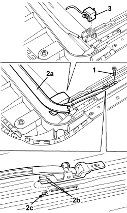

7030B42 SLIDING ROOF SPOILER - R+R
- Path
- Procedures > 70 FITTINGS > 7030 SUN ROOF/GLASS PANEL > 7030B SLIDING ROOF > 7030B42 SLIDING ROOF SPOILER - R+R
- Kind
- repair procedure (removal / refitting; the operation number is the code)
- Applies to
- all engines; all production periods
- Interactive page
- https://sloeber94.github.io/elrnDB/alfa/159/en/#/939004832
Applies to: all engines; all production periods
 Removing
Removing
 Refitting
Refitting- Retract the transparent panel until the spoiler fastening bolt (1) can be accessed.
1. Undo the spoiler retaining bolt on both sides.
2. Remove the spoiler (2a) releasing the side retainers (2b) from the seats (2c).
3. If necessary, release the spring and support.

Applies to: all engines; all production periods
Refitting
Removing- Check that the spoiler is not damaged.
- If removed, fit the spring and support.
- Position the spoiler, fitting the retainers in their housings, then tighten the bolts.
- Check that the spoiler is working by activating the sun roof, opening and closing it.